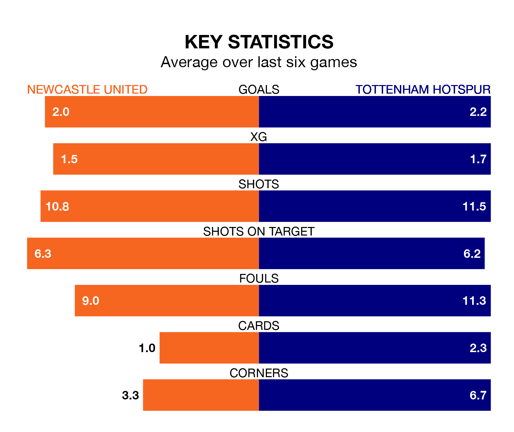

Newcastle United host Tottenham Hotspur on Saturday at St. James' Park in the Premier League.
In their last league match, on April 6, Newcastle beat Fulham 1-0 away, with their goal scored by Bruno Guimarães.
Spurs also won, 3-1 at home against Nottingham Forest on Sunday, with Mickey van de Ven, Murillo Santiago (own goal) and Pedro Porro on the scoresheet.
With 65 goals in 31 games so far this season, Newcastle are scoring more than average in the league with 2.1 goals per game. But they are conceding more than average too, letting in 52 goals at a rate of 1.7 per game.
Spurs are also above average scorers, with 2.1 goals per game, compared to a league average of 1.6. They have conceded 1.5 goals per game.
In the last 10 years, Newcastle and Spurs have played each other on 18 occasions. Newcastle won six of them, Spurs 10, and they drew twice.
On average, the Magpies scored 1.6 goals and Spurs 2.0 in those matches.
Their last meeting was on December 10, when Spurs won 4-1 at home.
United's Kieran Trippier is the league's most creative player, racking up 10 assists in 25 appearances so far this season.
For Tottenham, Heung-Min Son has set up the most goals, having laid on nine assists in 28 games.
The away side are fourth in the table after 31 games, of which they have won 18 and drawn six, earning 60 points.
The Magpies are four places behind Spurs in eighth, with 14 wins and five draws putting them on 47 points.
The hosts are in mixed form in the Premier League, with three wins and a draw from their last six games.
With four wins and a draw over that period, Spurs's form is better – they have taken 13 points from 18, compared to Newcastle's 10.
Updated: 11:20 (UTC), 09/04/24